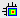

projd
NAME
projd - Display projections along with the 2D spectrum (2D)
DESCRIPTION
The projd command opens a dialog box where you can specify the projections to be displayed along with the 2D spectrum:
This dialog box offers the following three options:
- Display 1D spectra along with the 2D spectrum
- Displays the specified 1D dataset(s) as external projections
- Display projections along with the 2D spectrum
- Displays the internal projections.
- Turn projection display off
- Turns off the projection display.
In the lower part of the dialog you can specify the 1D datasets to be used for the first option. The checkboxes allow you to display the F2-projection, F1-projection or both. Clicking OK will show the projections according to the chosen option and close the dialog.

Note that the effect of the second and third option can also be reached by clicking the  button of the toolbar or entering .pr on the command line.
INPUT FILES
<dir>/data/<user>/nmr/<name>/<expno>/pdata/<procno>/
1r - 1D processed data (input for 1st option)
OUTPUT FILES
<dir>/data/<user>/nmr/<name>/<expno>/pdata/<procno>/
curdat2 - definition of the second and third dataset